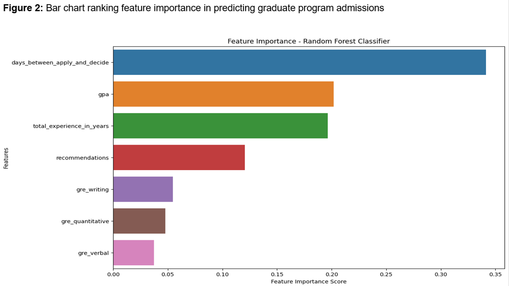
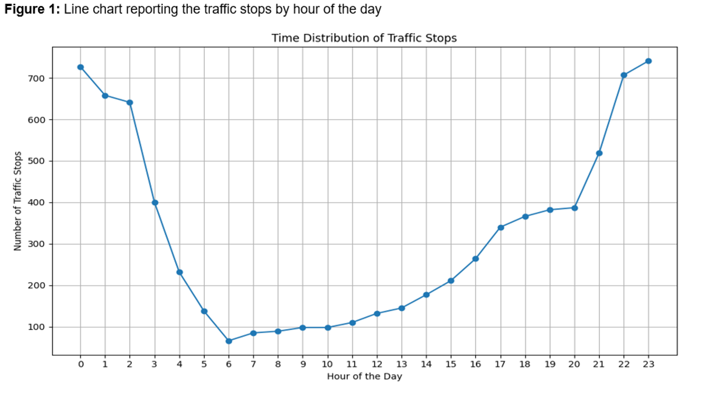
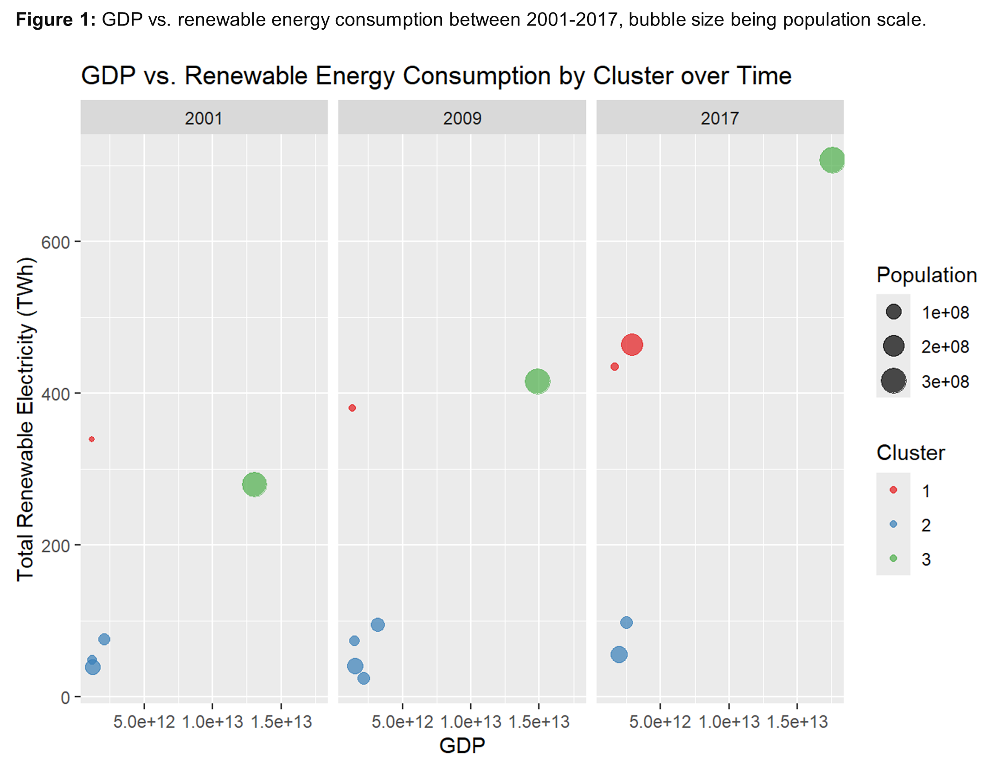

Sergio Hernandez-Acosta
<<<<<<< HEAD ======= >>>>>>> 45dc6610ceafaa6342442f3a83224da1ba5c3a6f
Projects in machine learning and data science
Deep NLP for Hate Speech Detection
Automated hate speech detection deciding whether a given text contains hateful content. Developed a hate speech classifier by leveraging PyTorch to fine-tune a BERT model.


<<<<<<< HEAD ======= >>>>>>> 45dc6610ceafaa6342442f3a83224da1ba5c3a6f
Predicting Admission Status into a Data Science Masters Program
The University of Texas at Austin began offering a graduate program in data science dating back to Spring 2021. Constructed a Random Forest Classifier and Bagging Classifier that predicts an applicant's admission result ('Accepted' or 'Rejected') based on common metrics like GPA, GRE scores, educational background.


Insights: Some of the top influential factors to get accepted include application promptness, undergraduate GPA, and at least some prior work experience. A candidate fares better the earlier they apply and if they have a GPA of around 3.50.
Predictive Policing: Examining Factors That Influence Police Searches
Employed a decision tree model to predict whether a search will occur during traffic stops by the Austin Police Department. Observed features such as time of day of the stop, location, race of driver, reason for stop, among others. Additionally, utilized GridSearchCV for model optimization.

Figure 2: Interactive heat map depicting the location of the traffic stops in Austin, Texas in 2019.
Insights: Significant findings include race's influence as a core correlational factor in search decisions and geographical location's (especially east-west coordinates in Austin) connection with the likelihood of searches. Moreover, stops' timing, particularly during late-night or early-morning hours, also played a role in search incidents.
Comparative Analysis of Economic Growth and Energy Mix
Employed k-means clustering analyses to uncover striking regional disparities in energy consumption, with distinct clusters indicating varying reliance on renewables versus non-renewables.

Insights: Wealthier regions tend to consume more renewable energy, as GDP growth facilitates investment in green infrastructure. Conversely, larger populations do not consistently correlate with higher renewable energy consumption, indicating other factors at play.